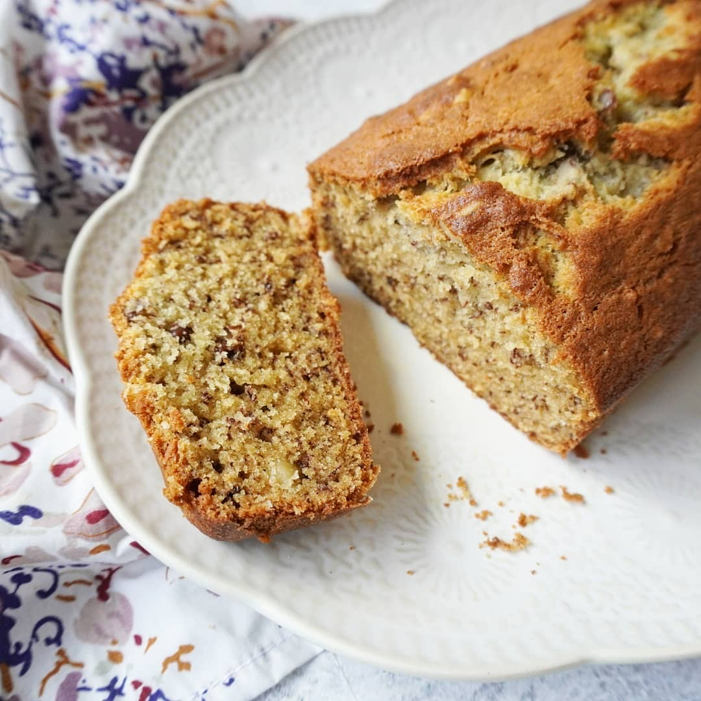

If you want to take a traditional banana pudding to the next level, giving it an Argentinian twist is the ultimate upgrade. In this adaptation, the standard vanilla custard is either completely replaced or generously layered with rich, creamy dulce de leche.
Instead of using plain vanilla wafers, it is common to use local sweet biscuits like Chiquitín or Lincoln, or even crushed vanilla vainillas (ladyfingers) lightly soaked in a splash of milk or a sweet liqueur. The combination of the sweet dulce de leche with the fresh, slightly acidic flavor of the ripe bananas creates a spectacular balance that hits home for anyone raised on Argentine flavors.
This hybrid dessert is incredibly easy to assemble and is a guaranteed crowd-pleaser for any family Sunday asado. To finish it off in true Argentinian fashion, the top layer is often loaded with a thick spread of fresh whipped cream (crema chantilly) and dusted with grated semi-sweet chocolate or cocoa powder.
It represents a brilliant fusion of American comfort food and Argentinian pastry obsession, proving once again that almost any dessert in the world can be improved by adding a good spoonful of dulce de leche.